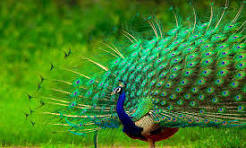
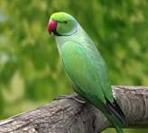
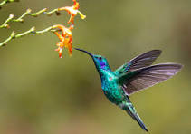
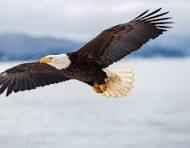
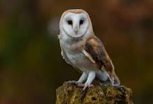
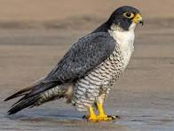
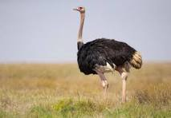

| Image | Bird Name | Information |
|---|---|---|
 |
Peacock | The peacock is a large, colorful bird known for its extravagant tail feathers, which it can fan out in a display. They symbolize beauty and grace in many cultures. |
|
Pigeon | Pigeons are often associated with cities and are known for their homing ability. They are gentle birds and can form strong bonds with their mates. |
 |
Parrot | Parrots are known for their vibrant colors and intelligence. They are famous for their ability to mimic human speech and are often kept as pets. |
|
Kingfisher | The kingfisher is a small but colorful bird that is often seen near water. It is an expert fisherman, known for diving into water to catch small fish. |
|
Sparrow | Sparrows are small, social birds that are found all over the world. They often live in large flocks and are known for their cheerful chirping. |
 |
Hummingbird | Hummingbirds are tiny birds that can hover in place by rapidly flapping their wings. They are also known for their ability to fly backward and feed on nectar. |
 |
Eagle | The eagle is a majestic bird of prey that symbolizes power and freedom. It has keen eyesight and can soar high in the sky in search of prey. |
 |
Owl | Owls are nocturnal hunters, known for their ability to rotate their heads and their silent flight. They are symbols of wisdom in many cultures. |
 |
Falcon | The falcon is a bird of prey that is known for its incredible speed. Some species can dive at speeds of over 240 miles per hour, making them the fastest birds. |
 |
Ostrich | The ostrich is the largest living bird. Native to Africa, it is known for its long legs and fast running speed, though it cannot fly. |